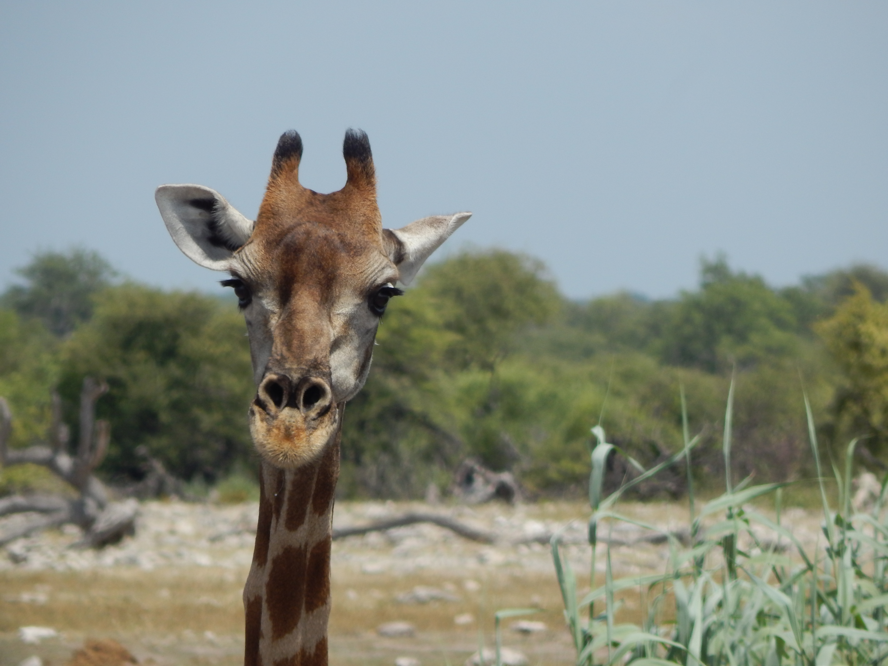

2024-02-28

These past few days have been a 8/10. I spent my time buying souveniers, going on a safari at Etosha National Park, and am writing this on my plane back to Japan.
I don't remember what i ate, but something of note is the fact this is the first blog post on here that contains an image! I'll try and add more in my upcoming entries, although they may be less frequent.
I've started reading Vasily Grossman's Life and Fate again, hopefully I'll be able to read through it soon.
2024-02-20
Today was a 6/10. I woke up at noon, and spent the afternoon setting up Syncthing on my ThinkPad, to sync my photos and music with my phone and other laptop. I was about halfway done with the 120gb synchronization transfer (at 2MiB/s) when I realized that I could just transfer everything through a cable, then let it sync with Syncthing from there, a major "Wow, I'm stupid" moment. In the evening, I argued with people on Discord about the symbolic meaning of Stepan Bandera and Chandra Bose, being tired of "leftists" so eager to denounce every image of Bandera in Ukraine as evidence of Nazism.
Lunch consisted of butter chicken curry, and dinner was chicken/onion hamburg (Japanese-style), along with 蓮根、蒟蒻と鶏肉の煮物.
I need to write e-mails and prepare for going back to Japan, and I think I'll go buy souveniers tomorrow.
Interested in increasing my capability to daydream/imagine ideas and scenarios in my head. What comes to mind the most are the Sea of Lilies scene from the Chronicles of Narnia, and the forest with the ponds that each travel to their own world (also from Narnia!). The tranquility is just really appealing to me, maybe because I feel like my surroundings are so busy (even though they really aren't).
I'm also interested in learning Chinese intensively before September, maybe through a month at a language school or so? I'm not sure how much I'd improve in such a relatively short period, though.
I'm also interested in the book 陰翳礼讃, I might read it to get a better understanding of my home culture before I go abroad.
2024-02-19
Today was a 5/10. I woke up at noon, and spent the afternoon on discord/instagram talking to friends, about what souveniers from Namibia to get them. In the evening, I learned how to use GitHub, and created this website.
Lunch consisted of egg fried rice and sichuan boiled beef (水煮牛肉), and dinner was sundubu, japchae, and spicy potatoes.
I should utilize my time more efficiently, reading the book I've been interested in, for example.
I don't have anything of note to write here today. I guess if I were to just write freely, I'm currently lightly obsessed over Yagate Kimi Ni Naru, because wow, the anime was good. I should read the manga soon.